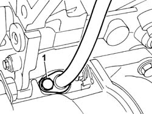
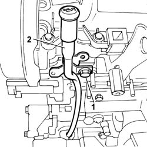
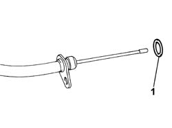
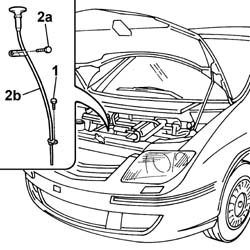
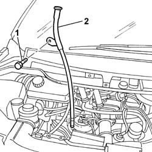

1084A16 OIL DIP STICK PIPE - R R
- Path
- Procedures > 10 ENGINE > 1084 ENGINE LUBRICATION > 1084A INDICATORS/CHECK DEVICES > 1084A16 OIL DIP STICK PIPE - R R
- Kind
- repair procedure (removal / refitting; the operation number is the code)
- Applies to
- all engines; all production periods
- Interactive page
- https://sloeber94.github.io/elrnDB-fUlss/en/#/179007153
Applies to: engines: 3.0 24V V6; all production periods
 Removing
Removing
 Refitting
Refitting- Position the vehicle on the lift.
- Disconnect the negative battery terminal.
Description | Connector | |
|---|---|---|
. | Battery | A001B |
Op. 4450B04 RIGHT FRONT WHEEL R R
Op. 7055B91 RIGHT FRONT WHEEL ARCH LINER - R.R.
Op. 4410D16 BRACKET (ONE) RETAINING CHASSIS TO BODY - R R
Op. 5050A10 WINDSCREEN WASHER FLUID RESERVOIR (IN ENGINE BAY) - R+R
See in Op. 1092G10
Op. 1092C14 POWER STEERING PUMP/SELF LEVELLING SUSPENSION PUMP PULLEY - R + R WITH BELT REMOVED
Op. 5530A40 ALTERNATOR BRACKETS/MOUNT/SPACER - R R
1. Undo the lower bolt securing the engine oil dipstick tube.

Applies to: engines: 3.0 24V V6; all production periods
- Raise the vehicle.
1. Undo the upper bolt securing the engine oil dipstick tube.
2. Release the engine oil dipstick pipe assembly from the engine.

Applies to: engines: 3.0 24V V6; all production periods
Refitting
Removing1. Replace the gasket.

Applies to: engines: 3.0 24V V6; all production periods
- Fit the engine oil dipstick tube assembly and tighten the upper retaining bolt.
- Lower the vehicle.
- Tighten the lower bolt fixing the engine oil dipstick pipe.
Op. 5530A40 ALTERNATOR BRACKETS/MOUNT/SPACER - R R
Op. 1092C14 POWER STEERING PUMP/SELF LEVELLING SUSPENSION PUMP PULLEY - R + R WITH BELT REMOVED
See in Op. 1092G10
Op. 5050A10 WINDSCREEN WASHER FLUID RESERVOIR (IN ENGINE BAY) - R+R
Op. 4410D16 BRACKET (ONE) RETAINING CHASSIS TO BODY - R R
Op. 7055B91 RIGHT FRONT WHEEL ARCH LINER - R.R.
Op. 4450B04 RIGHT FRONT WHEEL R R
- Connect the negative battery terminal.
Description | Connector | |
|---|---|---|
. | Battery | A001B |
- Remove the vehicle from the lift.
Applies to: engines: 2.0 16v; all production periods
Removing
Refitting- Undo the fixing boltS (1a) and remove the engine oil dipstick pipe (1b).

Applies to: engines: 2.0 16v; all production periods
Refitting
Removing- Fit the engine oil dipstick tube and tighten the retaining bolts.
Applies to: engines: 2.0 16V JTD; all production periods
Removing
Refitting- Remove the wiring from the work area.
1. Undo the bolt fixing the engine oil dipstick pipe to the cylinder block/crankcase.
2. Remove the engine oil dip stick releasing it from the engine oil sump.

Applies to: engines: 2.0 16V JTD; all production periods
Refitting
Removing- Position the engine oil dipstick pipe in its housing.
- Tighten the bolt fixing the pipe to the crankcase.
Applies to: engines: 2.2 16V JTD; all production periods
Removing
Refitting- Remove the wiring from the work area.
1. Undo the bolt fixing the engine oil dipstick pipe to the cylinder block/crankcase.
2. Remove the engine oil dip stick releasing it from the engine oil sump.
Applies to: engines: 2.2 16V JTD; all production periods
Refitting
Removing- Position the engine oil dipstick pipe in its housing.
- Tighten the bolt fixing the pipe to the crankcase.
Topics linked from this page (7)
- 1092C14 POWER STEERING PUMP/SELF LEVELLING SUSPENSION PUMP PULLEY - R + R WITH BELT REMOVED
- 4410D16 BRACKET (ONE) RETAINING CHASSIS TO BODY - R R
- 4450B04 RIGHT FRONT WHEEL R R
- 5050A10 WINDSCREEN WASHER FLUID RESERVOIR (IN ENGINE BAY) - R+R
- 5530A10 ALTERNATOR - R+R
- 5530A40 ALTERNATOR BRACKETS/MOUNT/SPACER - R R
- 7055B91 RIGHT FRONT WHEEL ARCH LINER - R.R.